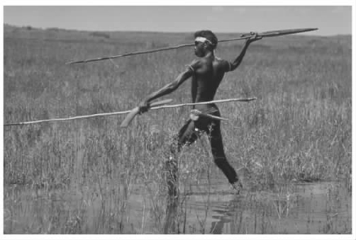
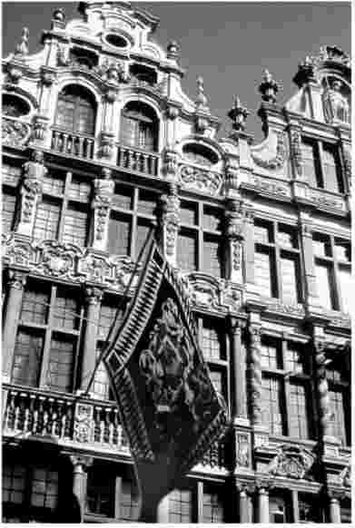
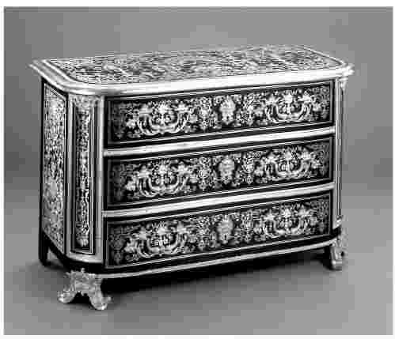
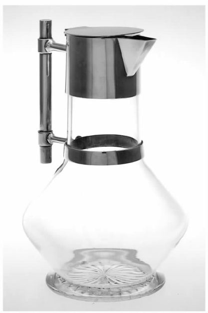
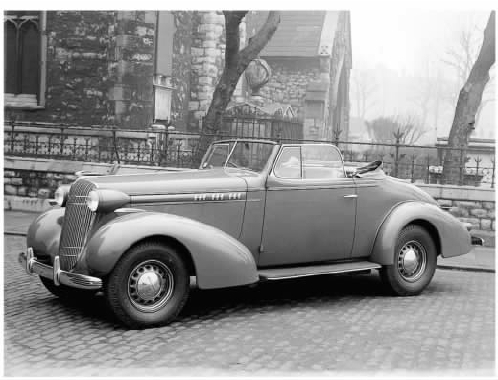

人类在历史上经历了不同层次的变革与发展，然而人类的天性却鲜有改变。我们与曾定居在中国、苏美尔或者埃及的古人可以算是同一类人。对我们而言，通过迥异的渠道（如希腊的悲剧或北欧的传说）来表达同样的人类困境并非难事。
有证据表明，随着技术、组织结构和文化的变迁，尽管表达的手段和方法发生了变化，人类的设计能力一直都保持着相对的稳定。虽然设计是人类一项独特且固定的才能，但在历史发展中它的呈现方式却并不相同，我们这里要讨论的是后者。
由于设计活动所涉及的范围非常之广，以至于任何对它的描述都难免成为一个提纲挈领的概述。为了了解当下的复杂性是如何形成的，只得使用大手笔，避免过多的细节，介绍主要的变革。
在探求人类设计才能的起源时，第一个难题是界定在何时、何地人类开始对他们的环境进行重大的改变——每次考古上的重大发现都会引发新一轮的辩论。由于人的手非常灵活，能自如转动，还能做出各种造型，有多种功能，手无疑成了这个过程中一个至关重要的工具。人的手不仅能够推、拉，还能够高强度地施力或控制力道。手有着多种功能，其中包括了抓、捧、握、揉、压、拍、砍、刺、击、掘或者敲等等。最初发明的工具无疑增进了手的这些功能，提升了它们的力量、精确性和灵敏度。
大约在一百万年以前的早期人类文明中，自然界的物体就被用作工具和器具，以增补或提高手的能力。比如，手能挖出土里的食用块根，但是人若是把棍子或蛤壳攥在手里，就能更轻松地完成这项工作。这样一来手不仅能够长时间作业，还能避免损伤手指和指甲。若是把一个贝壳用兽皮或须根绑在一根棍子末端恰当的位置上，就能做成一把简易的锄头，使工作变得更加轻松。在直立的姿势下，这样的工具使用的范围更广，效果更好。同样，我们可以合掌掬水喝，但是一个口径较深的贝壳可以永久地保持手掌掬水时的形状，使用起来就像勺子，盛水时不会漏水。即便是这种程度的改造，也要求人们能够理解形式与功能之间的关系。
在这些以及其他众多方面，自然界已有的可获取的材料和模型为我们提供了丰富的资源。这些资源极具可塑性，可解决大量问题。然而，一旦它们被改造，又会涌现出新的问题，比如如何使锄头耐磨而不易损毁，不会像海贝那样容易破裂。这便引发了其他范围内的改造，而这次不仅仅是用可获取的材料按自然界已有的形状改造，而是将自然材料改造成自然界中并不存在的模样。
早期的发明中还有一大特点就是通过革新技术、形状、式样来满足新的目标和实践。例如，1993年一支考古队在土耳其南部一个叫作恰约尼的地方发现了一个史前农业村庄的遗址。他们在那里发现了现存最早的纺织品残片。这一残片大约生产于公元前7000年，是用家用亚麻布织成的，很明显地借用了已有的编织篮子的技术。
其他事物的改造明显也借鉴了自然形态。自然形态仍然常常为了某个特殊的目的而被当作理想的模型。早期的金属或陶土制品常常与它们摹拟的自然模型形状一致，比如金属做的勺子会呈现出海螺壳的形状。
在很早以前，人类就创造了各种形状的模型，对于何种形状能满足何种目的，我们已经形成了固定的概念。而与此相反的是，人类也具有创新的能力。事实上，形状已经越来越贴近社会需要，它与生活方式相互交织在一起，成为传统不可分割的一部分。在生活没有保障、生命受到威胁的环境下，我们从未轻易抛弃融入在形状中并由这些形状来体现的人类经验。
不仅如此，随着时间的推移，无论是有心还是无意，这些流传下来的形状有些变得越来越考究，有些接受了新工艺手段的改造。这些新的模型慢慢成了标准模型，又在具体社会环境下接受进一步的改造。例如，在西格陵兰地区，爱斯基摩人主要定居地里的居民用于渡海的皮船各不相同。
图1 格陵兰岛上爱斯基摩人的皮船。
一味地强调手工艺中手的作用，难免会低估了另外的两项发展。这两项发展在提高人类改造环境的能力上也是至关重要的。它们都是对人类先天局限性的挑战。其中之一通过借助自然力、优于人类体能的动物体能、风力和水力等资源，来弥补人类体力上的不足，同时选择优良的植物和动物种类进行培育以获得更高的产量。这些都需要经过调查，累积知识，并判断哪些知识能有利于发展。在这方面，书面记录和视觉再现起到了至关重要的作用。
我们使用的工具最初来自自然形态，到后来完全由人类独创。随着工具的发展，我们有能力将累积的实用经验提升到抽象理论的层面。在相当长的一段时间内，人类的这个能力变得越来越重要。抽象观念使我们能够从具体的问题中抽身，得出一般规律，并自如地用规律来解决其他问题。
语言或许是抽象思维最佳的范例。文字本身并无任何意义，在使用过程中既是任意的，又带有强制性。比如，house、maison以及casa在英语、法语和意大利语中都表示可供人类居住的有形之物，但它们只有在各自的社会中才能获得约定俗成的意义。总而言之，这种语言的抽象能力使观念、知识、工序和评价得以积累、保存并世代流传。这种能力同时也是了解任何制作工序不可或缺的一部分。换言之，在任何创造性的过程中，智力和思维方式与手和工具（包括铁锤、斧子或凿子）一样重要。前者指再现和表达潜在概念的能力，是人们使用“脑力工具”的能力。后者代表了身体技能。
在设计方面，抽象能力触发了纯文化上的发明。这些发明不参照人类的外形、运动技巧或自然界的其他形式。很多有关几何图形的概念可能是实践过程中累积的经验，经过整理后又用于指导其他实践。比如，澳大利亚土著居民所使用的带钩的矛式投掷器（当地人叫它“掷枪”）的演变就再现了这种抽象能力。人们一定是做了长期的试验和改进，才提高了矛式投掷器的准确性，使其在打猎中发挥出更大的威力。然而，轮子的形状是无法在外界找到明确参照物的——人类的四肢无法以自身为轴旋转，自然界也无法为此提供灵感。可以说，不停旋转的概念是史无前例的发明。换言之，物品不一定都是为了解决具体问题的，它们大可大大扩展，超出时空限制，在一个创新的、改进的动态过程中将生活的理念具体化。

图2 造型简单，工艺性复杂：澳大利亚土著居民使用的掷枪。
因此，仅凭手和其他一些官能，都无法构成设计能力的源头。应该说，手、其他官能及大脑三方协调，共同构成了人类日趋强大的支配世界的能力。从人类生活的起源开始，出于个人和社会不同的需要，人们采用不同的形式和过程来适应不同的环境。这种灵活性和适应性造成了方式和结果的多样性。
早期的人类社会是游牧式的，人们靠打猎和采集野生食物来维持生活。随着生活模式的改变，为了寻找新的食物来源，轻巧、便携、顺应性强便成了主要的标准。随着更多以农业为基础的定居型乡村社会的发展，为了适应新型的生活方式，一大批不同的特色和形式传统迅速涌现出来。但是必须强调的是，传统并非一成不变，它时刻产生细微的变化以适应人及其所生存的这个环境。虽然传统形式凝缩了社会群体的经验，它的具体表现形式还得为适应个人需要做各种细微的调整。一把长柄镰刀或一把椅子有基本的、通用的形状，但因使用人的体格和身体比例不同，在细节处理上也不尽相同。定制的基本原则促使新的改进不断涌现。这些改进如果被经验证明是先进的，则会被纳入主流传统。
随着有固定生活方式的农业社会的出现，人口得以集中，手工艺的专业化得到了更高层次的发展。在众多文化中，寺院不仅是人们冥想和祷告的地方，也是一些手艺人的集中地。他们有足够的自由去实践，常常走在工艺创新的前端。
人口密度高的城市社区分布越来越广。随着财富的积累，人们滋生了各种奢华的需求，这些需求吸引了越来越多的专业技艺超群的手工艺者。这样便促成了手工艺者协会的形成，它们常常以行会或类似的形式出现。比如，早在约公元前600年，印度的城市中就已经存在这样的机构了。身处于这样一个动荡的世界，无论在何种文化背景下出现的行会，社会、经济的稳定都是它们追求的主要目标。行会普遍的作用在于维持工作和管理的标准。在某些控制层面上，它们预示了许多现代职业协会的特点，代表了持照设计师的早期模式。
行会常常能够通过地位的提升和财富的增加对所在社区施加巨大的影响。比如文艺复兴时期，位于德国南部的奥格斯堡就以金、银器匠精美的工艺而著称。这些金、银器匠是当时城市生活中的一大主要势力。十七世纪早期该市的市长达维德·索赫尔就是这个行会的成员。
然而，行会的影响力和控制力最终还是被人们从多个方面瓦解了。当远距离贸易中心开始开放的时候，冒着巨大危险追求同等回报的中间商们逐渐控制了生产。一些手工业利用边远地区的剩余劳动力，大大削弱了行会的标准，并把对形式的控制权放到了中间商的手中。在中国，景德镇的瓷窑生产了大量瓷器出口印度、波斯和阿拉伯半岛，并从十六世纪开始向欧洲出口。随着制造商与市场之间远距离贸易的开启，产品被生产出来之前它的形态就已经确立。画稿和样品从欧洲被送到中国，特定的形式和装饰被运到不同的市场，然后提供给不同的客户。十五世纪末，随着印刷机在欧洲的推广以及绘画和印刷物的发行，形式的概念得以广泛地流通。个体设计师专门针对形式与装饰，出版了各种制图样的小册子，使从业者摆脱了行会对产品内容的控制，同时扩充了有关产品形态的图库。

图3 工艺、财富及社会地位的象征：位于布鲁塞尔皇宫的行会公所。
政府出于自身的目的控制并利用设计，政府的这些举措也削弱了行会的势力。十七世纪早期，为了实现对奢侈品生产和贸易的国际控制，法国君主利用优势的地位、豪华的设施把最优秀的工匠吸引到巴黎，通过立法促进出口贸易，限制进口贸易。迎合了贵族市场的手工艺者享有各种特权，并且生活优渥。在君主的帮助下，手工艺者渐渐摆脱了行会的控制。

图4 高贵、优雅的展示：由安德尔·夏尔·布尔于1710年左右在巴黎设计的带抽屉的小柜。
十八世纪中叶兴起的工业革命带来了规模最浩大的变革。产品完全由机器生产制造，这让生产者陷入了窘境。手工艺者大多不能或不愿意顺应工业生产的需要。此外，为吸引开放市场中有能力的购买者，新的形式来源亟待确立。此时的市场主要是针对中产阶级，即时代新贵的。当更多实力更强的制造商进入市场后，竞争变得越来越激烈。同时，为了激起顾客的购买欲，产品需要具有不同的时尚品味。这些都要求注入新的观念。当时，唯一受过专业制图训练的只有学院派艺术家，越来越多的厂商开始委托他们对流行品味中的形式和装饰进行界定。比如，英国画家约翰·弗拉克斯曼就为乔赛亚·韦奇伍德陶瓷制品厂做了几个类似的设计项目。
但是，艺术家们对美学概念如何能转换到产品中要么一无所知，要么所知甚少，而且，新环境也需要新技术。就某个层面而言，制造业需要一批新的工程设计师。这些人得掌握钟表和器具制造方面的工艺知识，并能快速地将其运用到解决技术性的问题上。这些问题包括制造有多种用途的机器——比如，制造更耐用的蒸汽发动机的汽缸，这种汽缸能产生更大的压力和动力。
在讨论有关形式的问题上，曾出现过两个颇具影响的新群体。第一类人的工作建立在不断探求能被市场接受的新概念上，这类人后来成了所谓的时尚顾问。第二类人是新兴的制图员。越来越多的制图员受雇于工厂，他们或者接受时尚顾问、中间商或工程师的指令，或者使用艺术家制作的绘图或介绍花色的小册子，为具体生产提供专门的绘图技术。在第一次工业时代，这些制图人俨然成了设计的机器，通过复古或者复制竞争对手已获得成功的产品，承担着生成形式的责任。
产品形态或计划的设想与实际产品制造之间的分离进一步加深，使得功能不断被细分。人们在不了解生产背景的情况下设计形式，造成了很多家用器具的包装设计与其功能脱节。在很多人眼中，过度的工业化使得艺术贬值、品味和创造力降低。英国是工业革命的摇篮，约翰·罗斯金和威廉·莫里斯等人在这里发起了对工业社会的批判。这场运动在很多国家产生了深远的影响。十九世纪晚期，随着“工艺美术运动”的确立，罗斯金等人倡导的批判运动所产生的影响在英国达到了顶峰。他们宣称，这些设计工匠们将一度已经被人们遗忘的设计活动和社会标准重新统一了起来。然而，在1914年，随着第一次世界大战的爆发，人们看到了现代工业所释放的暴力。这份苦涩的回忆导致了浪漫化的中世纪田园怀旧形象的日渐泛滥。
即便如此，人们仍然相信艺术的力量高于工业的力量。例如，1917年俄国革命后，许多理想主义的艺术家试图以工业为载体，通过艺术来改造前苏联社会。这一设想在包豪斯建筑学派的原则中也发挥了重要的作用。包豪斯建筑学派是一战后在德国创立的一个学派，它认为社会可以也应该利用机器生产将艺术的力量传达到社会的不同层面，至于究竟该如何传达，它也提出了自己的设想。作为一种理想，它引发了二十世纪不同时期受包豪斯建筑学派影响的设计师的共鸣。但实业巨头并未打算妥协。这种艺术设计师的理念成为了现代众多设计渠道中的一个重要元素。有名的艺术设计大师，如迈克尔·格雷夫斯或菲利普·斯塔克，仍受到广泛的关注。然而，在实际操作中，艺术设计师并没有成为现代社会的改造大师。

图5 功能的简约：由克里斯托弗·德莱塞于1885年在设菲尔德设计的水壶。
如果说，欧洲孕育生成了一种强大的设计理论，强调工艺艺术的地位，那么，美国在二十世纪二十年代开始的新一轮工业技术和组织机构的变革则深深地改变了设计实践。通过投入巨额资金进行大规模生产，大额交易引发了新一轮的产品革新。这些新产品不仅从根本上改变了美国生活和文化的各个方面，它们产生的影响力还辐射到了全球的各个角落。为了刺激市场，产品必须时时更新，再加上大量广告战的刺激，导致了顾客无节制的购买。
比如，汽车就是一个典型的例子。在欧洲，汽车首先是为有钱人量身定制的玩具。但是，随着1907年亨利·福特的T型车的投产，汽车的价格逐步调低，慢慢成了大众都能消费得起的产品。福特遵循大规模生产的逻辑，坚信这个单一款型能满足所有人的需要，而它唯一要做的就是降低成本，提高产量。与之相反，通用汽车公司总裁阿尔弗雷德·P.斯隆则认为新的生产方式必须与不同的市场消费水平相适应。斯隆于1924年制定了一个方针，用以解决大规模汽车生产和产品多样化之间的矛盾。利用在各条流水线上生产的汽车基本配件，就可以给产品设计不同的外形，以此来迎合不同的市场需求。专攻风格的设计师由此应运而生。这些设计师通过生成视觉形式，从视觉效果上与其竞争对手相区别。
不过，像亨利·德莱弗斯那样顶尖的设计师开始慢慢规划他们所扮演的角色，希望能通过与工业合作实现对社会的改造。第二次世界大战之后，设计师将其专长延伸到了形式设计之外，并开始着手解决客户在交易中遇到的那些更基本的问题。唐纳德·德斯基曾经是有名的家具设计师，后成为美国纽约大型顾问公司的负责人。这家公司专门提供商标和包装方面的咨询。就连首席设计师雷蒙德·洛伊也指出美国制造业品质在滑坡，购买者在被产品外在的式样吸引后发现产品在使用上不尽如人意，进而对整个制造业大失所望。他们为美国企业习惯模仿竞争对手的产品、设计意识日益淡薄而感到担忧。他们称，设计虽不是必选项，但作为一种高级的战略规划活动，它对企业的竞争远景至关重要。

图6 设计成为主流：1936年奥兹莫比尔的折篷车。
从二十世纪六十年代开始，美国逐渐成为各国商品角逐的角斗场，美国的市场上开始逐步形成变革意识。在面对日本、德国等国的进口商品时，美国一些大型的工业部门在与它们的竞争中败下阵来。这些国家不仅注重产品的质量，而且非常注重设计的整体性。
然而，这些盛极一时的设计方法也被逐步取代了。我们能感受到各个方面发生的变革。到了二十世纪八十年代，设计上发生了急剧的转型，人们淘汰了现代主义朴素的几何风格，纷纷投入到后现代主义的名下。这一转型的主要特点是形式上的选择性过剩。这些形式与实用性毫无关系，它们任意地、频繁地出现，导致了选择性过剩。这一转型并不反映事实的本质，相反，它从根本上准确地描述了与事实无关的那部分内容。不仅如此，产品语义学概念在大量吸收了语言学上关于符号和意义的理论后，又为它们提供了理论上的支持。换言之，抛开设计师的个人偏好不论，即便意义几乎无法反映任何价值，即便这样会导致混乱，人们仍认为设计中所包含的意义比任何实用目的更重要。
另一个重要的趋势是由新兴技术带来的，如信息技术和弹性制造。它们专门定位在小规模的利基市场 [1] ，为满足具体需要，提供产品定制服务。一些设计师为了响应这一趋势，着手倡导新的方式。他们专门针对用户的使用习惯开发出整套的方法，建立硬件和软件之间的联系，在复杂系统的设计上充当战略规划师的角色。电子媒体采用的交互设计也面临着新的问题，即如何帮助用户驾驭庞杂的信息。对有购买能力的用户解释新技术是非常重要的。
这些变革不过是一个重复出现的历史模式的一部分。如上所述，设计史上每一个新阶段的出现都不会将之前的种种整个推翻，而是叠加在已有的成果之上，这就是贯穿设计史的轮回模式。它不仅有助于解释为何当下社会设计模式的构成中会存在如此多样的观念和实践方式，而且提出了一个问题——未来我们会在何种程度上面临类似的变革。未来具体会发生什么尚未可知，但是其征兆却确凿无误，比如新技术、新市场、新的商业组织形式都在从根本上改变着我们的世界。毫无疑问，新的环境下需要新的设计观念和实践。然而，围绕这个问题最大的不确定性在于：它们将为谁的利益服务？